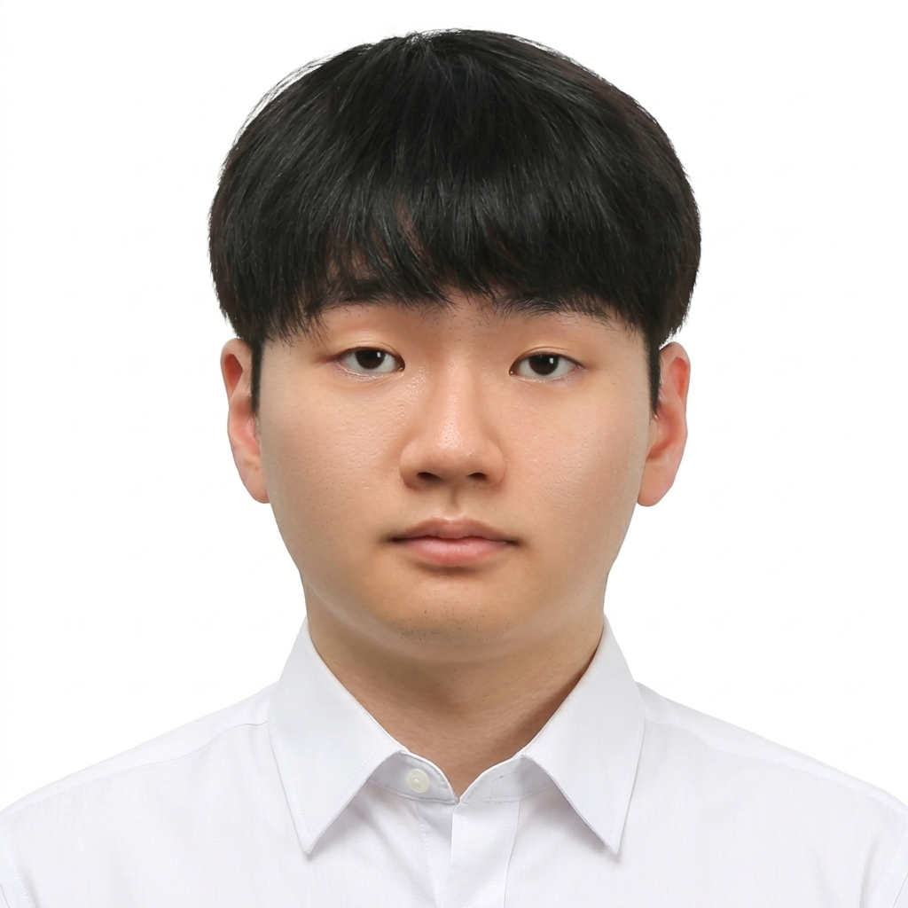
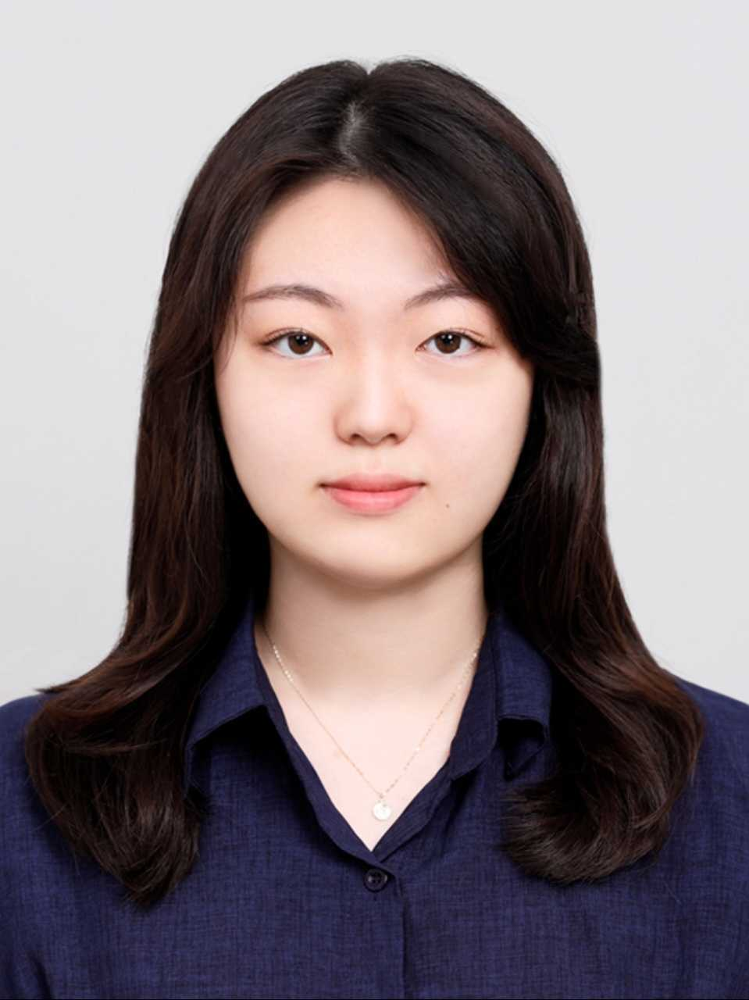
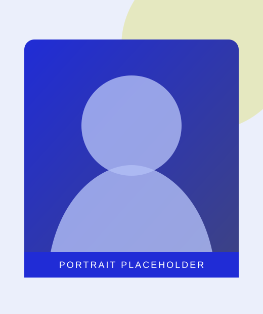
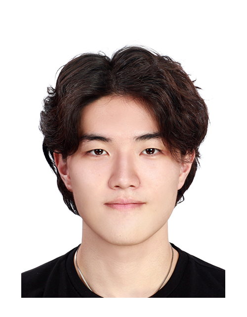

Jinkwang Kang
Undergraduate ResearcherResearch Interests
- Humanoid Robotics
- Bipedal Locomotion
- Robot Control and Dynamics


Meet the researchers and students of HEARD Lab.




Columbia University
My research focuses on human-centered robotics, multimodal perception, and machine learning, with an emphasis on developing intelligent assistive systems. At Columbia University's ROAR Lab, I have worked on integrating multimodal sensor data and deep learning to enable real-time human posture recognition and adaptive robotic assistance. My current research collaboration with the HEARD Lab focuses on estimating center of pressure (CoP) from kinematic and anthropometric data, initially exploring Gaussian Process Regression (GPR) while investigating additional machine learning approaches to improve estimation accuracy and generalizability.